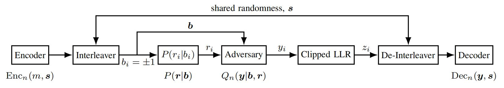

Mingjun Ying

E-mail: yingmingjun [AT] nyu [DOT] edu
The best way to reach me is by email.
GitHub
Google Scholar
Linkedin
CV
Biography
I am currently a Ph.D. candidate at NYU WIRELESS, New York University, under the supervision of Prof. Theodore S. Rappaport. I received my M.S. degree in Electrical Engineering from New York University in May 2025 (Thesis). I hold a B.E. (Hons.) degree from Chongqing University of Posts and Telecommunications, where I was under the guidance of Prof. Yongjun Xu during my undergraduate studies.
Research
My current research interests lie in the fields of green communication, channel modeling, wireless ray tracing, adversarial communication, satellite communication, etc.
Projects
NYURay: Python-Based Ray Tracer for Wireless Channel Prediction (Sept. 2024 - Now)
- Supervisor: Prof. Theodore S. Rappaport (Member of US National Academy of Engineering, Founding Director of NYU WIRELESS, IEEE Life Fellow)
- Implemented reflection, diffraction, penetration, and scattering propagation mechanisms in a Python-based calibrated ray tracer for high-fidelity site-specific channel prediction across the upper mid-band spectrum.
- Developed GPU-accelerated ray tracing algorithms achieving 100× speedup, enabling simulation of 106 rays in complex environments in under 3-5 seconds per TX-RX pair.
- Created 3D visualization tools for spatial channel analysis, including transmitter-receiver placement, antenna radiation patterns, and antenna orientation.
NYURay Ray Tracing Visualization: 3D environment reconstruction with propagation path analysis
Waste Factor: A New Metric for Evaluating Power Efficiency in any Cascade (Jan. 2023 - Now)
- Supervisor: Prof. Theodore S. Rappaport (Member of US National Academy of Engineering, Founding Director of NYU WIRELESS, IEEE Life Fellow)
- Developed a novel metric, Waste Factor, to evaluate power efficiency in ANY cascaded systems.
- Enhanced Waste Factor for data center analysis using power usage effectiveness (PUE).
- Simulated component efficiency impacts on Waste Factor at different frequencies in a 1 km² cellular cell.
- Extended the metric to analyze parallel/MIMO systems and radio access networks (RAN), and help drive decision making for wireless networks.

|

|
FR3 Radio Propagation Measurement and Modeling in 6.75 GHz and 16.95 GHz (Nov. 2023 - Now)
- Supervisor: Prof. Theodore S. Rappaport (Member of US National Academy of Engineering, Founding Director of NYU WIRELESS, IEEE Life Fellow)
- Conducted comprehensive FR3 measurement campaigns at NYU for 6.75 GHz and 16.95 GHz frequencies.
- Creating a detailed statistical spatial channel model based on radio propagation data from outdoor, indoor, and factory environments together with penetration loss and cross-polarization discrimination (XPD) measurement at 6.75 GHz and 16.95 GHz.
- Publications: [UMi] [InH] [InF] [Point-Data] [Penetration]
Capacity of a Binary Channel with a Time-Bounded Adversary (Feb. 2024 - Now)
- Supervisor: Prof. Sundeep Rangan (Director of NYU WIRELESS, IEEE Fellow)
- Derived the worst-case adversarial capacity for binary channels with a time-bounded adversary.
- Developed a method using random interleaver and thresholded LLR decoder to achieve optimal capacity.
- Demonstrated successful integration of the proposed method into 5GNR LDPC decoder architectures.
- Proved the effectiveness of the proposed method under various adversarial scenarios. [Paper] [Code]
|  |

|

|
Material-Aware 3D Reconstruction for Wireless Ray Tracing (Sept. 2023 - Now)
- Supervisor: Prof. Theodore S. Rappaport (IEEE Life Fellow) and Prof. David Fouhey
- Developed an automated framework generating ray-tracing-compatible 3D models with electromagnetic material properties from RGB video, reducing reconstruction time from months to a few hours.
- Integrated MASt3R-SLAM point cloud generation, PTv3 semantic segmentation, and Qwen3-VL vision-language model to automatically classify and label object materials.
- Validated framework via dual-band measurements (6.75 GHz, 16.95 GHz) across 12 TX-RX locations in a 700 m² factory using NYURay ray tracer, achieving comparable RMSE to manual baseline.
End-to-end 3D reconstruction pipeline
MASt3R-SLAM workflow for generating 3D point clouds from RGB video sequences

Raw Point Cloud |

Cleaned Point Cloud |

Surface Normals |
Resource Allocation for Wireless-Powered Backscatter Networks (Undergraduate Thesis) (Sept. 2022 -Jun. 2023)
- Supervisor: Prof. Yongjun Xu (IEEE Senior Member), CQUPT
- Developed and optimized an energy-efficient, wireless-powered backscatter communication network using OFDMA and robust optimization techniques, significantly improving network throughput and reducing outage probability under imperfect CSI.
- Utilized the Dinkelbach method and variable substitution to transform the resource allocation problem into a convex optimization problem, solved using the Lagrange dual method.
- Demonstrated superior performance and robustness through MATLAB simulations, outperforming traditional backscatter and harvest-then-transmit algorithms.
Research Training Program of CQUPT (Apr. 2021 - Apr. 2022)
- Supervisor: Prof. Yongjun Xu (IEEE Senior Member), CQUPT
- Proposed a joint radio resource and passive beamforming optimization scheme for a downlink RIS-assisted wireless powered communication network with a harvest-then-transmit protocol to improve the system energy efficiency (EE).
- Jointly optimized the active beamforming of the PS and the passive beamforming of the RIS.
 |
 |
Industry Experience
6G Wireless and Machine Learning Intern (May 2025 - Aug. 2025)
MediaTek USA Inc., Warren, NJ
- Supervisor: Doru Calin, AVP, Head of U.S. 6G Wireless Research Center
- Contributed to the development of MediaTek's internal ray-tracing tool and validated simulation results against real-world measurements.
- Built automated indoor reconstruction pipelines and performed ray-tracing simulations for outdoor-to-indoor coverage prediction across entire buildings.
6G Wireless and Machine Learning Intern (May 2024 - Aug. 2024)
MediaTek USA Inc., Warren, NJ
- Supervisor: Doru Calin, AVP, Head of U.S. 6G Wireless Research Center
- Collaborated with the research team on TN-NTN (Terrestrial-Non-Terrestrial Network) coexistence solutions.
- Developed joint beamforming algorithms for TN-NTN coexistence and interference management.
Publications
Journal Articles
- [J1]M. Ying, D. Shakya, P. Ma, G. Qian, and T. S. Rappaport, "Site-Specific Location Calibration and Validation of Ray-Tracing Simulator NYURay at Upper Mid-Band Frequencies," npj Wireless Technology (in major revision), Jul. 2025. [PDF] [BibTeX]
- [J2]A. Bazzi, M. Ying, O. Kanhere, T. S. Rappaport, and M. Chafii, "ISAC Imaging by Channel State Information Using Ray Tracing for Next Generation 6G," IEEE Journal of Selected Topics in Electromagnetics, Antennas and Propagation, 2025. [PDF] [BibTeX]
- [J3]D. Shakya, M. Ying, T. S. Rappaport, H. Poddar, P. Ma, Y. Wang, and I. Al-Wazani, "Comprehensive FR1(C) and FR3 Lower and Upper Mid-Band Propagation and Material Penetration Loss Measurements and Channel Models in Indoor Environment for 5G and 6G," IEEE Open Journal of the Communications Society, vol. 5, pp. 1–12, Jul. 2024. [PDF] [BibTeX]
- [J4]T. S. Rappaport, M. Ying, N. Piovesan, A. De Domenico, and D. Shakya, "Waste Factor and Waste Figure: A Unified Theory for Modeling and Analyzing Wasted Power in Radio Access Networks for Improved Sustainability," IEEE Open Journal of the Communications Society, vol. 5, pp. 1–12, Jul. 2024. [PDF] [BibTeX]
- [J5]T. S. Rappaport, M. Ying, and D. Shakya, "Waste Figure and Waste Factor: New Metrics for Evaluating Power Efficiency in Any Circuit or Cascade," Microwave Journal, vol. 67, no. 5, pp. 54–56, May 2024. [PDF] [BibTeX]
Conference Papers
- [C1]M. Ying, P. Ma, D. Shakya, and T. S. Rappaport, "Multi-Stage Location Optimization Through Power Delay Profile Alignment Using Site-Specific Wireless Ray Tracing," IEEE Global Communications Conference (GLOBECOM), Taipei, Taiwan, Dec. 2025 (accepted). [PDF] [BibTeX]
- [C2]S. Jia, M. Ying, et al., "Joint Detection, Channel Estimation and Interference Nulling for Terrestrial-Satellite Downlink Co-Existence in the Upper Mid-Band," IEEE Global Communications Conference (GLOBECOM), Taipei, Taiwan, Dec. 2025 (accepted). [PDF] [BibTeX]
- [C3]M. Ying, D. Shakya, T. S. Rappaport, P. Ma, Y. Wang, I. Al-Wazani, Y. Wu, and H. Poddar, "Upper Mid-Band Channel Measurements and Characterization at 6.75 GHz FR1(C) and 16.95 GHz FR3 in an Indoor Factory Scenario," IEEE International Conference on Communications (ICC), Montreal, Canada, Jun. 2025, pp. 3303-3308. [PDF] [BibTeX]
- [C4]D. Shakya, M. Ying, T. S. Rappaport, P. Ma, I. Al-Wazani, Y. Wu, Y. Wang, D. Calin, H. Poddar, A. Bazzi, M. Chafii, Y. Xing, and A. Ghosh, "Urban Outdoor Propagation Measurements and Channel Models at 6.75 GHz FR1(C) and 16.95 GHz FR3 Upper Mid-band Spectrum for 5G and 6G," IEEE International Conference on Communications (ICC), Montreal, Canada, Jun. 2025, pp. 3291-3296. [PDF] [BibTeX]
- [C5]T. S. Rappaport, D. Shakya, and M. Ying, "Point Data for Site-Specific Mid-band Radio Propagation Channel Statistics in the Indoor Hotspot (InH) Environment for 3GPP and Next Generation Alliance (NGA) Channel Modeling," IEEE International Conference on Communications (ICC), Montreal, Canada, Jun. 2025, pp. 3285-3290. [PDF] [BibTeX]
- [C6]D. Shakya, M. Ying, and T. S. Rappaport, "Angular Spread Statistics for 6.75 GHz FR1(C) and 16.95 GHz FR3 Mid-Band Frequencies in an Indoor Hotspot Environment," IEEE Wireless Communications and Networking Conference (WCNC), Milan, Italy, Mar. 2025, pp. 1–6. [PDF] [BibTeX]
- [C7]D. Shakya, N. A. Abbasi, M. Ying, I. Jariwala, J. J. Qin, I. S. Gupte, B. Meier, G. Qian, D. Abraham, T. S. Rappaport, and A. F. Molisch, "Standardized Machine-Readable Point-Data Format for Consolidating Wireless Propagation Across Environments, Frequencies, and Institutions," IEEE MILCOM, Los Angeles, USA, Oct. 2025, pp. 1–6 (accepted). [PDF] [BibTeX]
- [C8]M. Ying, F. B. Sarpkaya, S. Bakirtas, E. Erkip, T. S. Rappaport, and S. Rangan, "Capacity of a Binary Channel with a Time-Bounded Adversary," 58th Asilomar Conference on Signals, Systems, and Computers, Pacific Grove, CA, USA, Oct. 2024, pp. 801–805. [PDF] [BibTeX]
- [C9]M. Ying, D. Shakya, and T. S. Rappaport, "Using Waste Factor to Optimize Energy Efficiency in Multiple-Input Single-Output (MISO) and Multiple-Input Multiple-Output (MIMO) Systems," IEEE Global Communications Conference (GLOBECOM), Cape Town, South Africa, Dec. 2024, pp. 1–6. [PDF] [BibTeX]
- [C10]D. Shakya, M. Ying, T. S. Rappaport, H. Poddar, P. Ma, Y. Wang, and I. Al-Wazani, "Propagation Measurements and Channel Models in Indoor Environment at 6.75 GHz FR1(C) and 16.95 GHz FR3 Upper-Mid Band Spectrum for 5G and 6G," IEEE Global Communications Conference (GLOBECOM), Cape Town, South Africa, Dec. 2024, pp. 1–6. [PDF] [BibTeX]
- [C11]D. Shakya, T. S. Rappaport, E. Shieh, M. E. Knox, H. Rahmani, D. Shahrjerdi, M. Ying, K. Fan, M. Lu, A. Rumiantsev, V. Mallette, G. Fisher, G. De Chirico, P. Ghate, and S. McMahon, "Four-Port Probe Stations and SOLR Calibration Standard Design Up to 125 GHz on 28 nm CMOS," IEEE Asia Pacific Microwave Conference, South Korea, Dec. 2025, pp. 1–3 (accepted). [PDF] [BibTeX]
- [C12]D. Shakya, M. Ying, T. S. Rappaport, H. Poddar, P. Ma, Y. Wang, and I. Al-Wazani, "Wideband Penetration Loss through Building Materials and Partitions at 6.75 GHz in FR1(C) and 16.95 GHz in the FR3 Upper Mid-band Spectrum," IEEE Global Communications Conference (GLOBECOM), Cape Town, South Africa, Dec. 2024, pp. 1–6. [PDF] [BibTeX]
- [C13]M. Ying, D. Shakya, H. Poddar, and T. S. Rappaport, "Waste Factor: A New Metric for Evaluating Power Efficiency in Any Cascade," IEEE Global Communications Conference (GLOBECOM), Kuala Lumpur, Malaysia, Dec. 2023, pp. 6735–6740. [PDF] [BibTeX] (Best Paper Award)
- [C14]M. Ying and S. Wang, "Self-Optimizing Water-Filling Power Allocation: A Hybrid Fractional Frequency Reuse Way," 2022 13th International Symposium on Communication Systems, Networks and Digital Signal Processing (CSNDSP), Porto, Portugal, Jul. 2022, pp. 208–213. [PDF] [BibTeX]
- [C15]M. Ying and S. Wang, "Capacity Analysis and Hybrid Power Allocation for Multi-cell 5G Networks," 2022 11th International Conference on Communications, Circuits and Systems (ICCCAS), Singapore, Dec. 2022, pp. 192–197. [PDF] [BibTeX]
- [C16]Y. Lian, M. Ying, S. Wang, and Y. Wang, "An Efficient Maximum Subcarrier Power Detection Scheme for OFDM-IM Systems," 2023 International Wireless Communications and Mobile Computing (IWCMC), Marrakesh, Morocco, Jun. 2023, pp. 258–263. [PDF] [BibTeX]
- [C17]Y. Lian, M. Ying, S. Wang, and Y. Wang, "An Efficient Fast Walsh-Hadamard Transform Based OFDM-IM Scheme with Lower PAPR," 2023 Wireless Telecommunications Symposium (WTS), Boston, MA, USA, Apr. 2023, pp. 1–6. [PDF] [BibTeX]
Patents
- [P1]Yongjun Xu, Mingjun Ying, and Qianbin Chen. "A Robust Energy Efficiency Optimization Method for RIS-Assisted WPCNs." Chinese Patent CN113613273A, Nov. 5, 2021. [Link]
- [P2]Yongjun Xu, Mingjun Ying, and Jihua Zhou. "A Robust Resources Allocation Algorithm for RIS-Enhanced WPCNs." Chinese Patent CN113825159A, Dec. 21, 2021. [Link]
Honors and Awards
- Best Paper Award, IEEE Global Communications Conference (GLOBECOM) 2023
- Li Publication Award, NYU Tandon School of Engineering
- National Scholarship, Chinese Government (Top 1%)
- Ernst Weber Fellowship, Department of Electrical and Computer Engineering, NYU
- Meritorious Winner, International Mathematical Contest in Modeling (MCM), 2022
- National Second Prize, Contemporary Undergraduate Mathematical Contest in Modeling, 2021